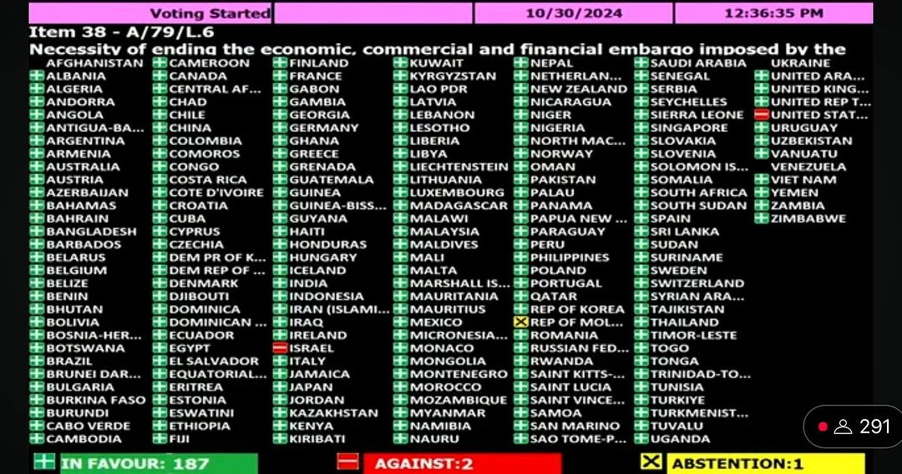
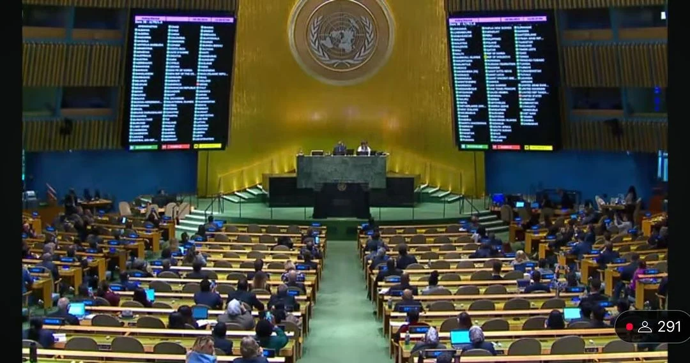

Actualité internationale
Cuba. 187 États votent à l’ONU pour la fin de l’embargo
Date indiquée par Facebook · 31 octobre 2024
Repères éditoriaux
Le 30 octobre 2024, l’Assemblée générale de l’ONU a adopté la résolution appelant à mettre fin à l’embargo des États-Unis contre Cuba. Le compte rendu dénombre 187 voix pour, deux contre et une abstention.
Texte conservé avec la publication
CUBA : 187 pays réclament la fin du blocus imposé depuis 1962. les États-Unis ne peuvent plus s’asseoir sur le droit international.
Une écrasante majorité des pays membres des Nations unies a de nouveau demandé la levée des sanctions illégalement imposées à Cuba depuis 1962. Seul soutien inconditionnel de Washington dans le plus long embargo de l’histoire moderne : Israël.
En soixante-deux ans, le préjudice causé par le blocus américain s’élèverait à plus de 151 milliards d’euros selon les autorités cubaines.
Les sanctions imposées par les États-Unis ont de graves conséquences sur des aspects économiques clés tels que le financement, le commerce, les investissements, l’accès à la technologie, le tourisme et les envois de fonds dans les familles a exprimé le Bureau du Coordonnateur local des Nations Unies chargé des activités opérationnelles de développement.
Il est grand temps de mettre fin à ce blocus illégal et de dire haut et fort que les États-Unis ne peuvent plus s’asseoir sur le droit international en toute impunité !


Sources
Archive rouge · export Facebook · AR-0002-FB-01257
À lire aussi · Le blocus contre Cuba : un crime monstrueux et passé sous silence depuis plus de 62 ans